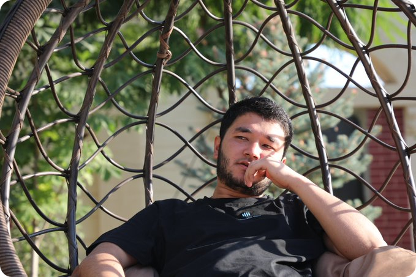

Bobur
@bobur_mavlonov
UX&UI designer at @abutechuz
Mashag’daman
Born November 24, 2000
Joined May 2020
67 Following
47 Followers
Pinned Tweet
Bobur
@bobur_mavlonov · Apr 14-kursni tugatgunimcha kamida bitta biznesim bo'lishini, uylanish uchun moddiy jihatdan to'la-to'kis tayyor bo'lishni, sog'lik va jismoniy holatni normallashtirishni reja qildim
Bobur
@bobur_mavlonov · Apr 1Bizda shunaqa bir illat bor: gap bo'lsa bo'ldi, nima deyayotganimizga qarab ham o'tirmaymiz.
Bitta biznes trener nito gapirib qo'ysa, hamma biznes trenerlar yomonga chiqadi slishkom aqlli odamlar nazdida.
Gap faqat biznes trenerlar haqida emas.
Bobur
@bobur_mavlonov · Apr 1A bo'pti maskamasman
